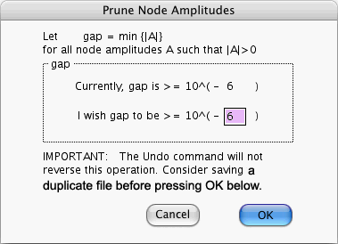

Quantum Fog does NOT spend any memory
in saving transition amplitudes that equal zero. (By a zero amplitude we
really mean one whose magnitude is smaller than 10-12). Thus,
a 1000 × 2000 transition matrix (for a node with 1000 states and 2000
input states) with a single non-zero entry occupies the same amount of memory
as a 1 × 1 non-zero transition matrix.
Quantum Fog does NOT spend any memory
in saving transition amplitudes that equal zero. (By a zero amplitude we
really mean one whose magnitude is smaller than 10-12). Thus,
a 1000 × 2000 transition matrix (for a node with 1000 states and 2000
input states) with a single non-zero entry occupies the same amount of memory
as a 1 × 1 non-zero transition matrix.
It is possible to encounter situations in which the transition matrix of a node has so many columns or rows that there isn't enough memory to store it. If only a minority of the entries of such a matrix have a large magnitude, and the rest have a small one, one may wish to filter out those entries that have a small magnitude; that is, to replace them by zero so as to save memory.
Define GAP to be the smallest |A|, where A ranges over all non-zero node amplitudes of every node of the graph. When you choose Prune Node Amplitudes... from the Prepare menu, Quantum Fog first calculates GAP. It then opens the following window:

This window displays the current value of GAP (rounded to the nearest power
of ten). Suppose you enter a number N in the shaded box to the right of the
words "I wish gap to be". If next you press the OK button, Quantum
Fog replaces by zero any amplitude whose magnitude is smaller than
10-N. Obviously, this has no effect if 10-N is smaller
than the initial GAP. This operation CAN'T BE UNDONE, so you better save
a duplicate copy of your file before trying this.